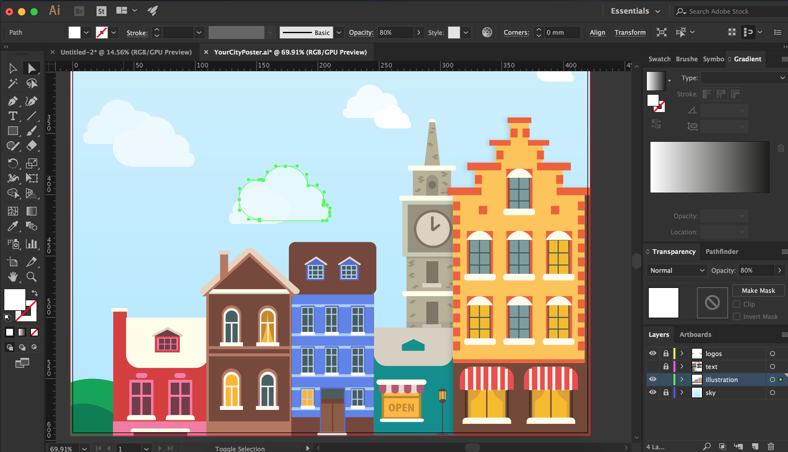
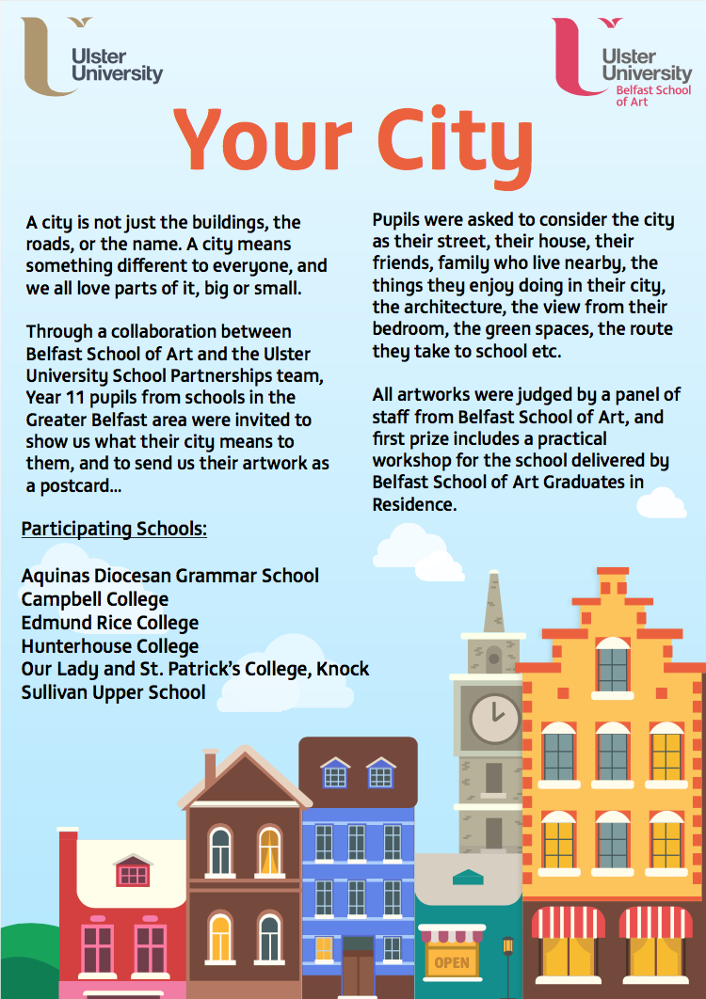

December 2016
On Tuesday morning Rachel approached me about making a poster for a competition that the University had held and was announcing the winners for that evening. I had two hours to get the poster finished and ready to send to the printers! This was the first time that I was under such a tight timeframe, normally I get tasks with at least 2 to 3 days to complete it, so I knew it would be a good learning experience to see how much I can get done when under pressure.
Rachel sent me a document with the text she needed on the poster which had been proof-read already so thankfully I didn't have to worry about that and could simply copy and paste. I set up the document and added 2mm bleed marks around the poster.
The poster was for Year 11 students from selected schools in the Greater Belfast area, and they had been asked to create a postcard illustrating how they see their city. I took inspiration from this and began creating an illustration of a few buildings you might see in a city. I knew it would be risky creating a complicated illustration under a tight time-frame but I wanted to give it a go as I thought it fit in well with the overall theme of the poster.
I created a gradient background for the sky and added in a few clouds at the bottom, just above the illustration. As the poster was quite text heavy, I split the text into to columns to avoid having long lines in order to fit it all in. I placed the two University logos at the top, and titled it 'Your City'. The poster was approved straight away and sent to the printer to be printed in A2 size.
It was obviously a massive relief to get the poster finished on time and getting positive feedback was encouraging, especially knowing that I took a bit of a risk undertaking quite a detailed illustration. I could have spent all day playing around with the details and if I had more time I would have added more details on the buildings as this is a style I like to work in, but looking at the finished product I am content with how it turned out. Now that the exhibition (pictured below) is over, the poster is on display in the Jordanstown Campus with the winning student entries.

Placement Journal
Paige Boyd